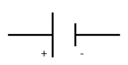
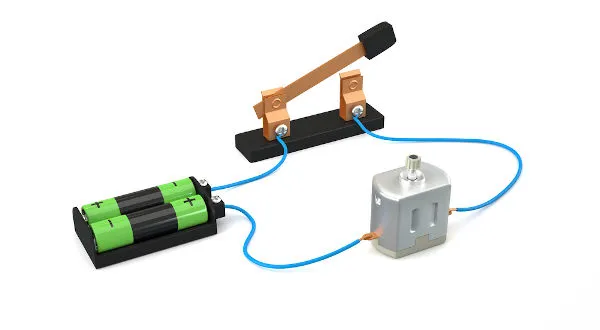
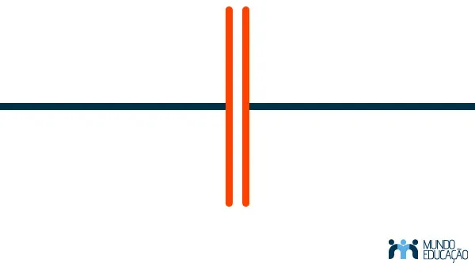
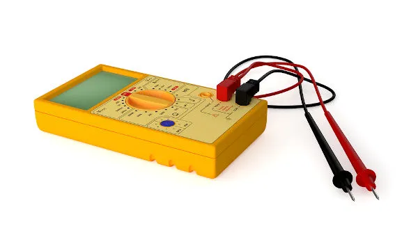
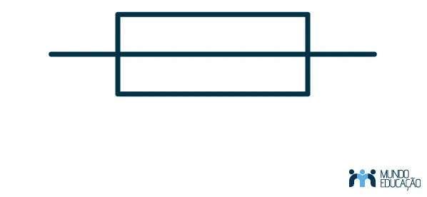

Circuito elétrico é uma ligação de dispositivos, como geradores, resistores, receptores, capacitores, indutores,
etc., feita por meio de um fio condutor, que permite a passagem de cargas elétricas pelos elementos do circuito. A
corrente elétrica passa pelo circuito graças à aplicação de uma diferença de potencial elétrico, produzida por uma
fonte de tensão.
Elementos dos circuitos elétricos
Os circuitos elétricos podem conter uma grande quantidade de elementos variados, com funções diversas, tais
como produzir calor, armazenar cargas elétricas, interromper a passagem da corrente elétrica etc. Vamos conferir
alguns dos mais importantes elementos presentes nos circuitos elétricos.
convertem formas de energia em energia elétrica. A principal função do
gerador é provocar uma
diferença de potencial entre os terminais dos circuitos elétricos, de modo que a corrente elétrica possa
fluir. Ex: Pilhas, baterias e tomadas.
dissipam energia elétrica exclusivamente na forma de calor. Esse fenômeno é conhecido como Efeito Joule.
Quanto maior é a resistência elétrica do resistor, menor é a corrente elétrica a atravessá-lo. Ex.: panelas
elétricas e chapinhas.
convertem energia elétrica em energia cinética. O ventilador, a batedeira, o liquidificador, o
ar-condicionado e a geladeira são exemplos de receptores, pois, dentro deles, há um motor elétrico que
produz movimento ou que comprime algum tipo de gás. O símbolo usado para representar os receptores é igual
ao símbolo dos geradores, no entanto, nos receptores, a corrente elétrica sempre flui do menor potencial
elétrico para o maior potencial elétrico.


Representação do receptor e exemplo de circuito elétrico com um receptor
armazenam cargas elétricas quando submetidos a alguma diferença de potencial. São utilizados na maior parte
dos circuitos elétricos, tanto para o armazenamento de cargas quanto para estabilizar o fluxo de elétrons no
circuito.

Representação do capacitor
Dispositivos de controle:
são usados para medir diferentes parâmetros do circuito, como tensão elétrica e corrente elétrica. Ex.: os
amperímetros, voltímetros e multímetros.

Exemplo de um dispositivo de controle
Dispositivos de segurança:
Fornecem um mecanismo de interrupção da corrente elétrica caso ela exceda o limite de segurança. O fusível
e o disjuntor são dispositivos de segurança.

Representação de um dispositivo de segurança
Tipos de circuitos elétricos
Existem circuitos elétricos simples, que são aqueles dotados de somente um dispositivo elétrico, que é
conectado diretamente a um gerador por meio de fios condutores, mas também há circuitos elétricos em que há mais
de um elemento, nesse caso, formando circuitos mais complexos. Esses circuitos mais complexos podem ser
classificados em: circuitos em série, em paralelo ou mistos (quando há ligações em série e
em paralelo no mesmo circuito).
Circuito em série
No circuito elétrico em série, os elementos são conectados no mesmo fio e só há um caminho para a passagem
da corrente elétrica. Por esse motivo, a corrente elétrica é igual em todos os elementos do circuito. O
mesmo não pode ser dito a respeito da tensão elétrica, que cai à medida que a corrente elétrica passa por
esses elementos.
Circuito em paralelo
No circuito elétrico em paralelo, há pelo menos dois caminhos em que a corrente elétrica pode fluir. Nesse
caso, todos os elementos que estão conectados em paralelo ficam submetidos à mesma tensão, no entanto a
corrente que passa por cada fio depende da resistência elétrica do elemento que se encontra em cada fio.